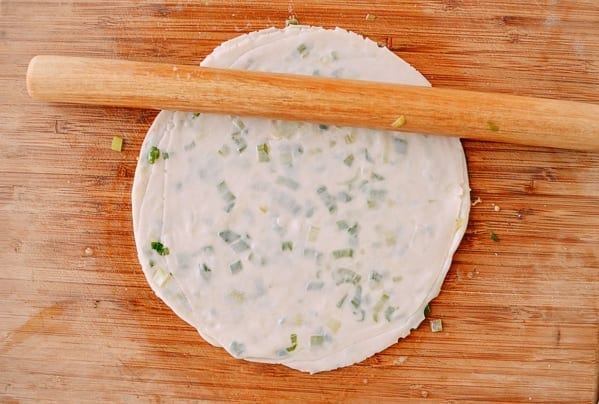

Software Developer @ James Jongs Design and Engineering
History
Scallion pancake is a savory pancake made from dough not batter like western pancake. It closely resembles a green onion paratha from Indian cuisine. The ingredients are simple flour, water, salt, oil and scallions. I remember making scallion pancakes with my mom on cold winter Saturdays. This savory treat is best enjoyed with a warm glass of sweetened soy milk.Ingredients
- 5 stalks of green onion
- 2 cups of flour
- 1/2 teaspoon of salt
- 3/4 cup of water
- 2 tablespoons of sesame oil (optional)
- Oil for frying
Instructions
- Chop all the scallions into 1/8 or 1/4 inch rounds.
- Mix salt, flour and water, adjust water and flour to get a dough that just comes together but is still very pliable and can be rolled.
- Roll out the dough into a 1/8 inch thick sheet.
- Brush sesame oil or regular oil across the dough’s surface.
- Spread the scallions evenly across the surface.
- Roll up the dough lengthwise.
- Cut 2 inch sections from the long roll.
- Now roll out the 2 inch sections individually to about 1/4 inch thickness. (You will get green onion piercing thru the skin it’s ok they will char nicely adding more flavor).
- You can stack the pancakes and make it more layered or you can just cook the each 2' round individually (you will still have a few layers from the log rolling process). 
- Now put 2 tablespoons of oil in a pan and fry the pancakes on medium low heat.
- When the pancakes eventually brown about 2-3 minute flip them over and fry for another 2-3 minutes.
- Remove from pan and slightly salt again.
- Then let the excess oil drain on a rack or paper towel.
- Tear you pancakes apart and enjoy the flaky layers of scallion.